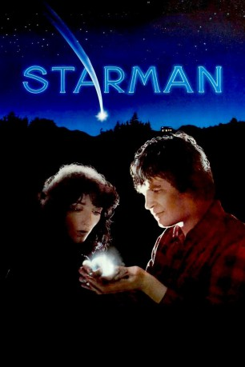

#4277 Starman
Auszeichnungen: für 1 Oscars nominiert
 
 IMDB-Wertung: 7.0 / 10
IMDB-Wertung: 7.0 / 10  Tomatometer: 84
Tomatometer: 84  Metascore: 0
Metascore: 0 
Jenny Hayden (Karen Allen) trauert noch immer um ihren toten Mann, als eine außerirdische Lebensform ausgerechnet in der Nähe ihres einsam gelegenen Hauses landet. Das Raumschiff des Fremden wird zerstört, weswegen er bald menschliche Form annimmt, notgedrungen die von Jennies Ehemann (Jeff Bridges), die er auf einem Foto gesehen hat. Das Alien ist aufgrund einer Einladung, die die Nasa an Bord einer Sonde gepackt hat, gekommen und muß bald nach Arizona, um dort von einem Raumschiff abgeholt zu werden. Kurzerhand kidnappt er die Frau, damit sie ihn dorthin bringt. Zuerst noch widerstrebend und das Militär informierend, findet sie zunehmend Gefallen an dem Fremden, der immer mehr menschliche Züge ihres Gatten annimmt. Inzwischen ist jedoch schon eine großangelegte Verfolgungsjagd im Gange.
Jahr: 1984
Dauer: 114 Minuten
FSK: 12
Land: USA Studio: Columbia PicturesTonspuren: DTS - ,
Untertitel: Deutsch,
Auflösung: 1080p (1920x800) Größe: 10956 MB
Genre: Liebe, Sci-Fi
Regisseur:  John Carpenter
John Carpenter
Drehbuch: Albert Hackett
Soundtrack:
Darsteller:
 Jeff Bridges als Starman
Jeff Bridges als Starman Karen Allen als Jenny Hayden
Karen Allen als Jenny Hayden Charles Martin Smith als Mark Shermin
Charles Martin Smith als Mark Shermin Richard Jaeckel als George Fox
Richard Jaeckel als George Fox- Tony Edwards als Sergeant Lemon
- Dirk Blocker als Cop #1
 M.C. Gainey als Cop #2
M.C. Gainey als Cop #2- Sean Stanek als Hot Rodder
- George 'Buck' Flower als Cook
- David Wells als Fox's Assistant
 Alex Daniels als Gas Station Attendant
Alex Daniels als Gas Station Attendant Mickey Jones als Trucker
Mickey Jones als Trucker Jeff Ramsey als Hunter #1
Jeff Ramsey als Hunter #1 John Carpenter als Man in Helicopter , uncredited
John Carpenter als Man in Helicopter , uncredited- Steve Dressler als Casino Photographer , uncredited
- Veronica J. Valentini als Roadblock Extra , uncredited
- Robert Phalen als Major Bell
- John Walter Davis als Brad Heinmuller
 Ted White als Deer Hunter
Ted White als Deer Hunter- Russ Benning als Scientist
- Ralph Cosham als Marine Lieutenant
- Anthony Grumbach als NSA Officer
- James Deeth als S-61 Pilot
- Carol Rosenthal als Gas Customer
- Lu Leonard als Roadhouse Waitress
- Charlie Hughes als Bus Driver
- Byron Walls als Police Sergeant
- Betty Bunch als Truck Stop Waitress
- Victor McLemore als Roadblock Lt.
- Steven Brennan als Roadblock Sergeant
- Pat Lee als Bracero Wife
- Judith Kim als Girl Barker
- Ronald Colby als Cafe Waiter
- Robert Stein als State Trooper
- Kenny Call als Donnie Bob
- Jerry Gatlin als Hunter #2
- David Daniell als Letterman
- Randy Tutton als 2nd Letterman
- Joel Edwards als Gas Station Attendant , uncredited
- Mark Jensen als Extra , uncredited
- Nick Sagan als Himself , archive footage, uncredited
Datei: X:\1984\Starman (1984, FSK12, 1920x800).mkv seit 30.08.2016
Festplatte: HD 1980-1986
 Es gibt insgesamt 46 Filme in der Gruppe '1984'
Es gibt insgesamt 46 Filme in der Gruppe '1984'